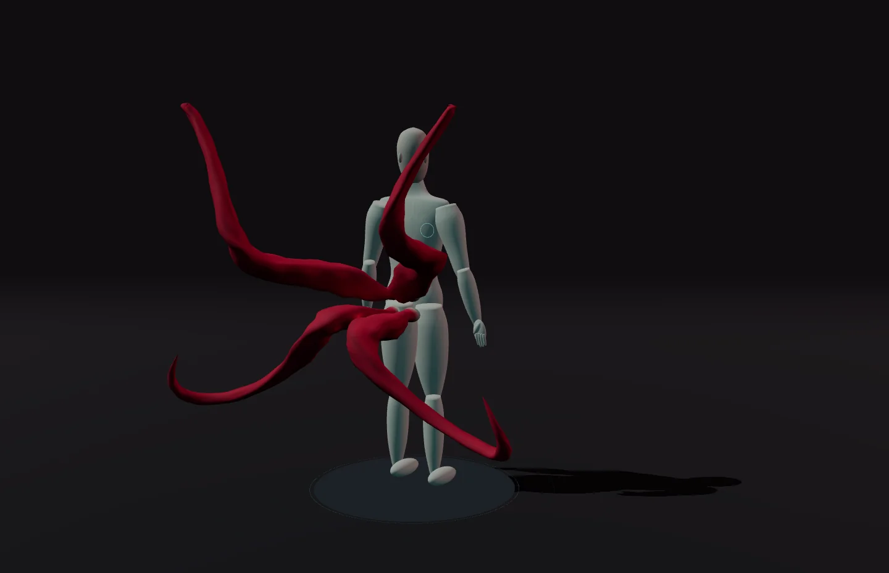
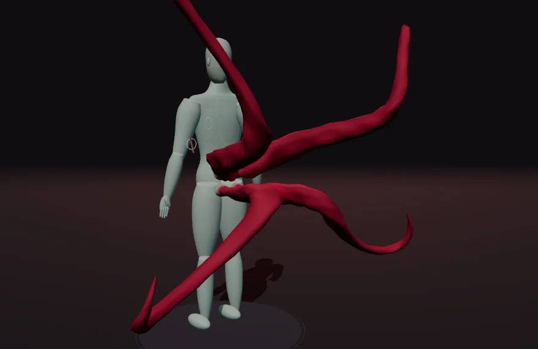

Estudos de identidade para o atlas anatômico ficcional. Os pôsteres usam capturas do próprio modelo conceitual.
Olho assimétrico, pupila deslocada e dois cantos fora da abertura.
Pálpebras abertas e pupila em fenda. O recorte sugere uma lâmina iluminada.

Inspecione o kakuhou e explore duas simulações conceituais.
